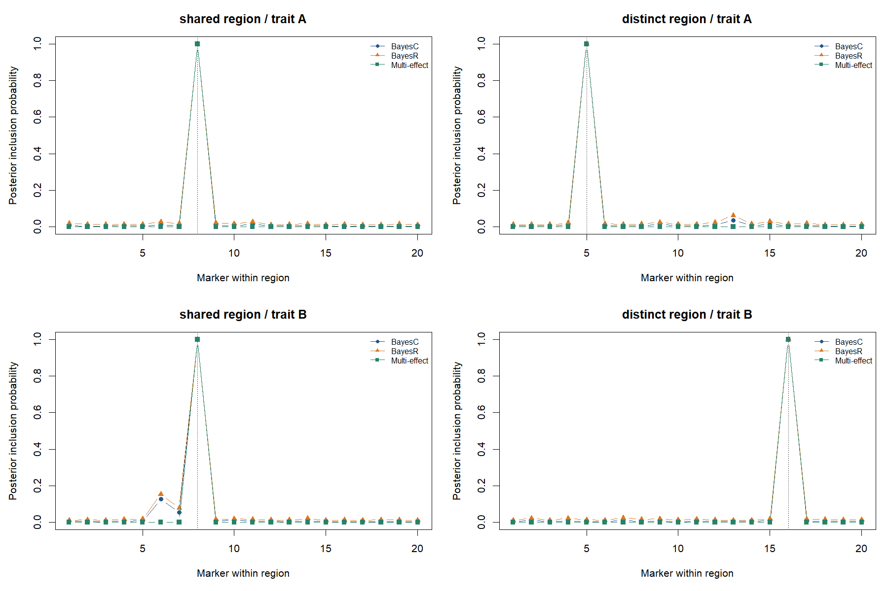
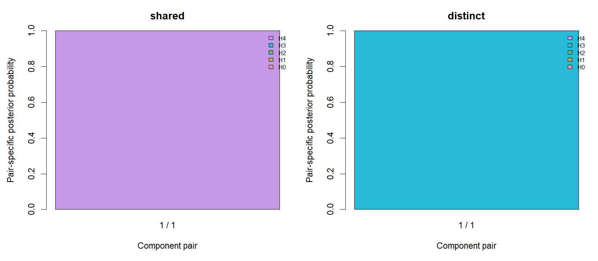

From GWAS results to fine-mapping and colocalisation
The workflow
Start with aligned GWAS results and a saved LDlist. Prepare the statistics, fit each region and trait, inspect marker support, then compare fitted multi-effect components with coloc().
This example requires a development installation of gsuite and gsim. Download the complete R script and run it from your working directory with source("run_gmap_workflow.R"). It writes one reusable result bundle and supporting files under build/examples/gmap-workflow; rerunning replaces those example outputs. Set options(gsuite.mapping.out = "another-directory") to choose another location. The website displays saved results and does not run models.
Prepare summary statistics
Each trait has an ordinary data frame with marker, allele1, allele2, beta, se and n. allele1 is the effect/counting allele. Marker rows and alleles must already match the entire reference in order. Alignment is a separate task; this helper never flips, reorders or drops markers.
library(gsuite)
LD <- readRDS("build/examples/gmap-workflow/LDlist.rds")
example <- readRDS("build/examples/gmap-workflow/workflow.rds")
gwas <- example$gwas
head(gwas$A)
stat <- gmap_stat(gwas, LD,
phenotype_variance = example$phenotype_variance)
regions <- example$regionsThe helper supports continuous outcomes analysed by ordinary linear regression with an intercept and conventional standard errors: a separate y ~ marker regression for each marker, without other covariates. All markers within a trait must use the same individuals. Supply the sample phenotype variance, not the residual variance or an assumed value of one.
For centered genotype \(x_j\) and outcome \(y\), the OLS identities give:
\[ d_j=x_j^\mathsf{T}x_j = \frac{(n-1)s_y^2}{(n-2)\operatorname{SE}(\hat\beta_j)^2+\hat\beta_j^2}, \qquad x_j^\mathsf{T}y=d_j\hat\beta_j. \]
gmap_stat() returns marker_ss = d and score = d * beta. The native model combines these with the regional LD correlation matrix \(R\):
\[ X^\mathsf{T}X \approx D^{1/2} R D^{1/2},\qquad D=\operatorname{diag}(d_j). \]
The marginal conversion is exact under the stated OLS contract. The full matrix is exact only with matching in-sample LD, apart from storage precision. This example uses an independent panel, so its off-diagonal entries are approximations. The SuSiE summary-statistic documentation also explains the role of in-sample LD in recovering an individual-data fit.
Covariate-adjusted, mixed-model, logistic, robust-SE, meta-analysis and varying-sample-size summaries are outside this helper’s contract. It cannot recognise the generating analysis from numbers alone. Supplying equal n does not prove identical samples. Correctly prepared cross-products can still be passed directly to gmap(); z-only conversion is deferred.
A small simulation with known truth
The complete script generates binomial dosages with correlated neighbours and uses gsim() for continuous phenotypes. The artificial coordinates have no biological interpretation.
| Setting | Value |
|---|---|
| GWAS cohorts | Two disjoint cohorts of 10,000 individuals each |
| LD reference | Independent 4,000-individual panel from the same generator |
| Regions | Two artificial chromosomes, 20 markers each |
| Genotype construction | Allele frequency 0.3; adjacent copy probability 0.8 |
| Shared region | m08 affects both traits |
| Distinct region | m25 affects A; m36 affects B |
| Effects | 0.12 and 0.14 per standardized dosage; converted to raw-dosage units |
| Residual variance | Known simulation value 1, fixed during fitting |
| Seeds | Genotypes 20260915; gsim 20260916 and 20260917 |
The LD reference retains all within-region correlations, is prepared once, and caches one eigensystem per region. Each call reuses that preparation across traits. The script fits traits separately; it is not a joint multivariate Bayesian model. Marginal GWAS results are calculated separately in each cohort.
Fit the three methods
prior <- list(residual_variance = 1, effect_variance = .04)
mc <- list(burnin = 1000, sampling_sweeps = 5000,
seeds = c(31, 97), retain_diagnostics = TRUE)
bayesc <- gmap(stat, LD, regions, method = "bayesc",
prior = c(prior, list(inclusion_probability = .05)), control = mc)
bayesr <- gmap(stat, LD, regions, method = "bayesr",
prior = c(prior, list(weights = c(.95, .01, .01, .03))), control = mc)
multi <- gmap(stat, LD, regions, method = "multi_effect", prior = prior,
control = list(effects = 3, max_sweeps = 500,
estimate_effect_variance = TRUE))These deliberately specified priors differ between methods; the example is not a ranking experiment. effect_variance is on the original GWAS effect scale. BayesR uses its default variance multipliers. Multi-effect can reduce unneeded component variances to zero. Residual variance is fixed in this example; the known simulation value is not a general recommendation for data. A regional fit also omits the other region’s small genetic contribution, so fixing the residual variance at one is a deliberate working approximation.
Learn parameters when needed
The default keeps the supplied variances and mixture weights fixed. To learn BayesC/BayesR effect variance and mixture weights, enable the native updates and supply explicit hyperpriors. For example, using the external-panel inputs above:
learned <- gmap(stat, LD, regions, method = "bayesr",
prior = list(residual_variance = 1, effect_variance = .04,
effect_variance_prior = list(df = 6, scale = .04),
weight_prior = c(95, 1, 1, 3)),
control = c(mc, list(estimate_effect_variance = TRUE,
estimate_weights = TRUE)))
learned$parametersThese hyperpriors illustrate the syntax; they are not universal settings. The variance prior is scaled inverse chi-square (df, scale), and scale is not its mean. weight_prior contains Dirichlet concentrations, null component first. BayesR variance multipliers remain fixed. The parameter table distinguishes fixed values from pooled MCMC posterior means or multi-effect variational estimates. Per-chain parameter means and optional traces remain in details.
Residual learning needs in-sample LD, so it is not enabled for this example’s independent reference panel. With a separately prepared complete LD_in_sample and statistics from the same individuals and centered design, the pattern is:
# Template: y, stat_in_sample and LD_in_sample must describe the same data.
normalization <- list(A = list(response_ss = sum((y - mean(y))^2),
likelihood_dimension = length(y) - 1,
in_sample_ld = TRUE))
learned_multi <- gmap(list(A = stat_in_sample), LD_in_sample, regions,
method = "multi_effect", prior = prior,
control = list(effects = 3, estimate_effect_variance = TRUE,
estimate_residual_variance = TRUE),
normalization = normalization)
learned_multi$parametersFor an intercept-only model the likelihood dimension is n - 1, not the n - 2 used by each marginal regression’s standard error. Covariate-adjusted inputs require the corresponding residualized design and response. The function cannot verify sample identity; in_sample_ld=TRUE is an explicit assertion. Thresholded or incomplete regional LD is rejected for residual learning.
BayesC/BayesR additionally require residual_variance_prior = list(df=..., scale=...) when estimate_residual_variance=TRUE. Multi-effect uses variational updates without that hyperprior and reports its residual trace and convergence flag. Normalization applies to every selected region for its trait. A regional residual includes effects omitted from that region; it is not automatically the whole-genome environmental variance. Subsequent colocalisation uses fitted parameter values, without integrating parameter uncertainty.
Inspect estimates, sets and chains
summary(bayesr)
head(bayesr$estimates)
bayesr$sets$shared$A
bayesr$details$shared$A$chain_agreement
plot(bayesr, region = "shared", trait = "A", quantity = "chains")
summary(multi)
multi$sets$shared$A
plot(multi, region = "shared", trait = "A", quantity = "objective")
For this fixed simulation, all methods selected the causal marker first:
| Region / trait | Top marker (all methods) | BayesC sum of PIPs | BayesR sum of PIPs | Multi-effect sum of PIPs |
|---|---|---|---|---|
| Shared / A | m08 | 1.109 | 1.297 | 1.000 |
| Shared / B | m08 | 1.273 | 1.465 | 1.000 |
| Distinct / A | m25 | 1.155 | 1.356 | 1.000 |
| Distinct / B | m36 | 1.111 | 1.293 | 1.000 |
The top-marker PIPs exceed 0.99999. Each fit returned one complete set. All four multi-effect fits converged in two sweeps. The largest BayesR PIP range between the two chains was 0.014. These strong signals make an easy workflow demonstration, not a demanding fine-mapping evaluation.
BayesC/BayesR report PIPs pooled over the two chains. Chain-specific PIPs and ranges are available; agreement alone does not certify convergence. Their sets group marginal PIP mass within LD neighbourhoods. Multi-effect sets represent component assignment probabilities. These set probabilities are not interchangeable, and this one simulation does not establish coverage. The sum of PIPs is the expected number of active markers, not necessarily the number of independent signals.
Compare the traits without refitting
shared <- coloc(multi, multi, trait1 = "A", trait2 = "B",
control = list(complete_region_coverage = TRUE,
non_overlapping_samples = TRUE))
summary(shared)
shared$estimates
shared$component_status
plot(shared, region = "shared")
plot(shared, region = "distinct")
H0 means neither trait is associated; H1/H2 mean only one is associated; H3 means distinct causal variants; H4 means a shared causal variant. These are component-pair probabilities, not a single region-wide posterior. The defaults are per-variant priors \(p_1=p_2=10^{-4}\) and \(p_{12}=10^{-5}\). In this run, shared-region H4 was 0.999999999991; distinct-region H3 rounded to 1, with H4 about \(3.24\times10^{-45}\). These values reflect this strong, artificial example and its specified priors, not general performance. Changing these priors reuses the saved evidence. No eligible component pairs means there is no eligible comparison; it is not evidence for H0.
Numerical checks and saved results
The script compares the converted scores and diagonals against direct cross-products from the simulated individuals. It also fits all three methods from both routes, with the same LD and seeds, and checks PIPs and posterior means. That validates the conversion; it does not validate the external-LD approximation or establish calibration. The LD file checksums are checked before and after fitting.
The run on 15 September 2026 used gsuite 0.43.0, gsim 0.9.0 and R 4.4.1. The largest score/diagonal discrepancy was \(1.82\times10^{-12}\); the largest posterior-mean discrepancy was \(1.11\times10^{-16}\). PIPs agreed to numerical precision. Approximate observed times for four region/trait fits per method were 0.69 s (BayesC), 6.16 s (BayesR) and 0.36 s (multi-effect). The whole script took 17.91 s, including preparation, repeat fits for verification, colocalisation and figures. These are illustrative elapsed times on one laptop, not a benchmark; another package-build process was also active.
example$conversion
example$equivalence
example$timing
summary(example$fits$bayesr)
summary(example$coloc)workflow.rds contains the summaries, prepared statistics, truth, fitted objects and checks. report.txt records summaries and package versions. The directory also contains two figures and compact CSV tables. Saved fits can be plotted without the LD files; a new coloc() call requires the reference files so that eligibility and reference checks can run.